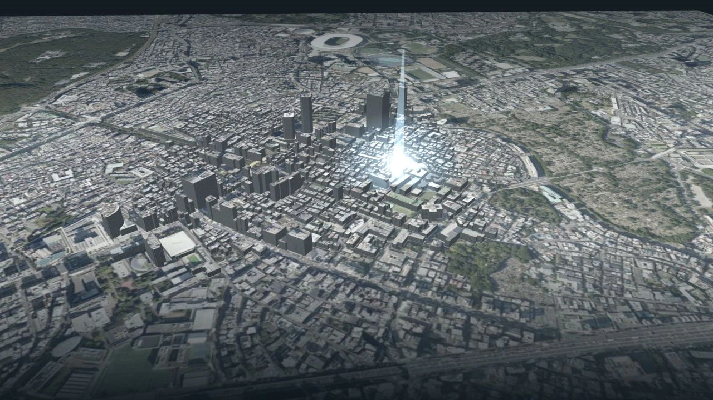

01 / THE GARAGE

表参道駅徒歩約7分

南青山三丁目。
建築条件のない土地から、
あなたの一邸を描く。


土地面積 151.75㎡（45.90坪）
セットバック後の有効敷地 132.37㎡（40.04坪）
更地渡し。間口の数値は資料記載値です。駐車台数・建築形状は設計と法令等の確認が必要です。


街の広がりから、この土地の魅力へ。
出典：国土地理院 ／ © OpenStreetMap contributors ／ 施設・駅の位置は概略です
プライベートな暮らしと、ゲストを迎える空間を検討。
住居と仕事場を組み合わせる活用を検討。
自社拠点や将来の売却を含め、保有目的に応じて検討。
用途・営業形態によって法令等の制限があります。各用途の可否は個別確認が必要です。将来の資産価値・収益・売却を保証するものではありません。

土地面積151.75㎡に対し、セットバック部分は19.38㎡です。
指定容積率300%をそのまま利用できない場合があります。構成資料の延床約210㎡前後は設計確認前の目安です。
ガレージ・地下室の床面積の扱いを含め、建築ボリュームは法令、敷地条件、設計により異なります。詳細は設計士等による確認が必要です。数値・適用条件の確認後に検討書をご案内します。
建築ボリューム検討書を請求する
9億8,000万円
坪単価 約2,135万円151.75㎡
45.90坪132.37㎡
40.04坪 / セットバック後準防火地域、24m第三種高度地区、日影規制3時間−2時間／測定面4m、容積率低減係数0.4、道路斜線勾配1.25、隣地斜線勾配1.25・立ち上がり高さ20m（提供チラシ記載）
提供資料に基づく情報です。最新の販売状況・面積の整合・法令の適用については、担当者へお問い合わせください。
引渡時期・販売区画数・取引条件有効期限・情報更新日・次回更新予定日・会社情報等は未提供／要確認